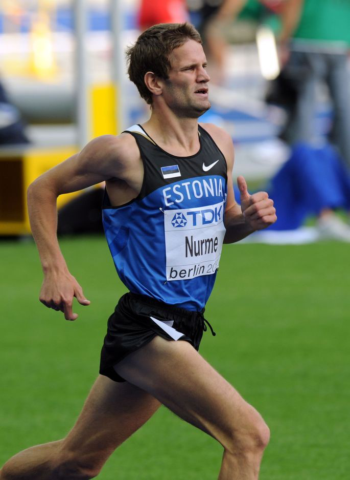

Tiidrek Nurme

Country: Estonia
School: Tartu University
DOB: November 18, 1985
Sponsors: Nike, Rand & Tuulberg, Tartu Ulikooli Akadeemiline Spordiklubi
Agent: Charles Paanakker - World Running, Netherlands
Personal Bests:
1500m - 3:38.59 (National Record)
1 Mile - 3:59.74 (National Record)
3000m - 7:48.24 (National Record)
5000m - 13:31.87
10000m - 28:37.85
Half-Marathon - 1:02:20 (National Record)
Marathon - 2:10:02
Multiple-time national champion in indoor, outdoor, cross country, and road races from 5k - Half-Marathon. He is a three-time Olympian, and has competed in numerous World Championships and European Championships in both track and the marathon.
